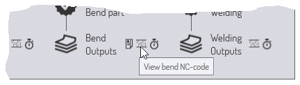
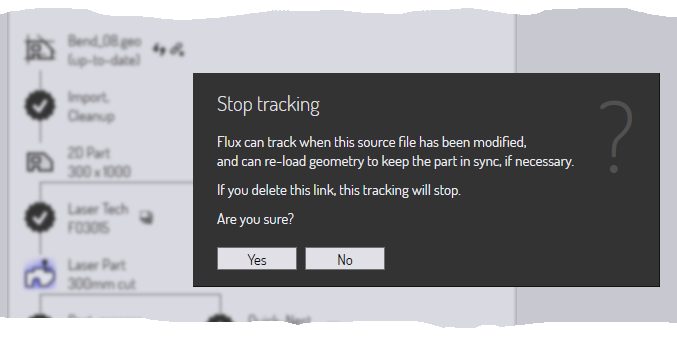

零件工作流程
由于TecZone Bend 具有许多集成模块，因此通常有多个_路径_可移动零件数据。
示例1：当您加载平面零件数据（从GEO文件或DXF文件）时，您可以选择
-
将激光加工分配给零件，以便将其放置在板材上并切割，与其他零件一起。
-
将零件沿折弯线折边成3D零件，以便加工和为折弯机计算折弯顺序。
示例2：当您导入3D平面模型（从IGES或STEP文件）时，您可以选择
-
分析表面，并沿着需要切割的孔放置5轴激光 CAM 加工。
-
进行特征识别，将平面模型转换为板材模型，然后将其展开成平面图案，以便用冲裁折弯机冲裁出来。
工作流程面板

工作流程面板就像一个中央枢纽，您可以由此指挥所有这些动作。当您打开零件时，您始终可以调出工作流程操作面板：只需按 W 或点击左侧指令栏中的工作流程图标即可。让我们探索一下工作流程操作面板；从导入一个带有折弯参数的2D零件开始（例如 GEO 文件）。此时调出工作流程操作面板将显示以下内容：
-
我们从Bend_28.geo开始，导入并清理，以创建2D板材零件（显示零件尺寸）
-
然后在工作流程中出现一个分支。
-
我们可以将激光工艺分配给零件（这仅仅意味着分配激光切割路径至零件轮廓）。
-
我们可以将平面零件折边成3D（检测到9个折弯）。
-
扩展工作流程节点：第1阶段
单击激光工艺图标为零件分配激光加工。您将看到零件会立即被分析并添加激光加工。然后，单击“折边成3D”图标，将平面零件折边成3D。完成这些步骤后，工作流程面板如下所示：

如注释所示，工作流程图中有不同类型的节点。
-
零件视图节点代表可在零件上执行的各种类型的加工。单击这些节点可将零件切换为该_视图_，零件上可用的操作集对该视图具有代表性。例如，在“激光零件”视图中，可以查看和编辑分配给零件的激光加工。
-
您可以通过单击这些图标在这些视图之间切换。所有这些不同的零件视图也有快捷键，只要将鼠标放置在其中一个视图图标处，即可进行查看。学习这些快捷键，以快速浏览整个工作流程。由此，一段时间后，您将可使用键顺序（如WBEsc）打开工作流程面板，切换到零件折弯视图，然后关闭工作流程面板。
-
零件数据通过不同过程在这些节点之间推送，这些过程在工作流程面板中使用13点星形图标表示。例如，您从2D零件视图移动到激光工艺流程的激光零件视图（分析2D零件并为其分配激光加工）。您已完成的流程中会显示一个勾选标记。您还没有完成（但可用）的流程中会显示一个打叉标记。您可以单击这些流程节点来完成流程。让我们总结一下我们在这个阶段的工作流程：
-
现在有3个零件视图可用（2D零件，激光零件和3D模式，我们可以在其之间切换）。
-
还有四个可用的流程：
-
我们可以后处理扁平零件（这将生成一个扁平零件报告，后者对激光或冲裁折弯机操作员很有用；它通常包括激光切割时间、冲裁折弯机加工设置和此零件的其他特殊加工要求）。
-
我们可以执行快速排样（快速排样是只包含一种零件类型的排样）并生成用该零件填充的完整板材。这可用于生产仅包含此零件的板材，或帮助快速估算此零件的成本或时间。
-
我们可以为零件分配折弯工艺（折弯机加工）。
-
我们可以为零件分配焊接工艺（焊接机器人加工）。
-

浏览工作流程面板
工作流程面板以紧凑的图纸形式呈现大量信息和操作。大多数情况下，这里将作为您处理零件的中心枢纽。让我们更仔细地看看工作流程面板中的一些图标，以了解如何使用它们。


辅助命令
许多节点附近都有小图标，提供辅助命令。这些命令提供一些与该节点相关的功能。以下是一些示例。
-
每个工艺节点附近的辅助图标通常允许您选择不同的机床并为该机床执行装备。

-
快速排样节点附近的图标允许您以不同的板材大小排样。
-
输出节点附近的图标可让您查看加工节点的各种输出（报告、数控程序或时间研究）。

源文件追踪
TecZone Bend中的大多数加工都是从导入CAD数据（2D或3D）开始的。从此CAD数据构建的TecZone Bend零件可以继续追踪这些源零件。打开零件时，TecZone Bend可以检查用于创建零件的原始CAD文件在此期间是否已被更改。如果已更改，则零件现在已过时，这可以在工作流程面板中看到。
-
您可以选择刷新零件，方法是单击源零件节点附近的刷新零件辅助图标。TecZone Bend 将重新导入CAD几何形状并重建零件。
-
您还可以选择停止追踪原始CAD几何形状。例如，如果原始CAD文件存在于可移除介质或在将来可能无法访问的远程驱动器上，此功能可能有用。要执行此操作，请单击源零件节点附近的断开链接辅助图标。这将提示您停止追踪源文件：

总结
以下是工作流程面板中原理的简要总结。
-
工作流程面板显示代表各种零件视图的节点（例如激光零件、折弯零件）和代表各种过程的节点（如折边到3D、分配激光加工）。
-
可用（尚未执行）的流程节点表示为13角星，里面有符号。已经完成的流程节点由内有标记的星形表示。
-
单击可用的流程节点会以默认设置调用该流程。Ctrl+Click 一个可用的流程节点，会显示一个编辑器，先编辑流程设置，然后调用流程。
-
单击已完成的流程节点可以调整过程设置和再次应用加工。Ctrl+Click 已完成的流程节点可删除加工数据。
-
通过流程节点或零件视图节点附近的小型辅助图标，可控制以更改该流程节点的一些重要参数（例如目标机床，或排样板材尺寸）。